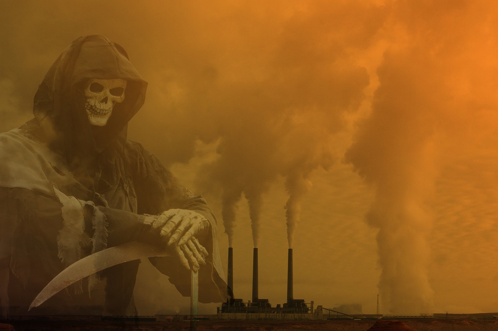
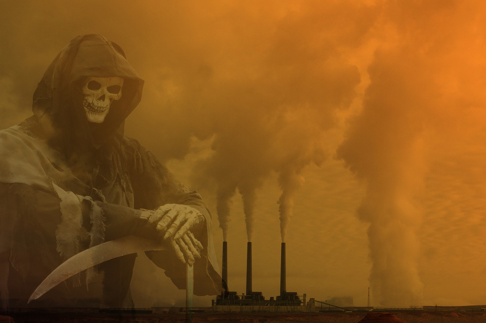

What is the truth about air pollution and how does it effect you?
Air pollution is the release of pollutants into the air and is caused by the burning of fossil fuels which can release dangerous gas and chemicals into the air. Some of these pollutants are greenhouse gasses like CO2, water vapor, methane, and nitrous oxide which when released into the atmosphere, trap heat and warm the earth. While it is normal for such gasses to be in the atmosphere, we've never seen such an overwhelming abundance of these gasses as we do now. The abundance of these gasses is not only heating up the atmosphere at an impossibly alarming rate, but as a result air quality in countless countries is diminishing. It's to the point where it's not safe to breathe atmospheric air in certain places as countless countries are reporting thousands of deaths being traced back to air pollution. According to the World Health Organization (WHO), "each year air pollution is responsible for nearly seven million deaths around the globe."
Most air pollution is actually created by people in the forms of factory, plane, and aerosol emmisions. Naturally occuring air pollution such as smokefrom fires and ash from volcanos are called natural sources. Second-hand cigarette smoke can also be considered air pollution. Man-made sources of pollution are called anthropogenic sources..
There are two major types of air pollution. Smog occurs when emitting combusting fossil fuels react with sunlight. Ozone pollution is not only causing the arctic to melt at the fastest rate it ever has, but having the greatest impact in the region of origination, is the reason some areas are significantly warmer than others.
Soot which is also known as particulate matter or any solid or liquid substance transferred into the air according to nrdc.org, "is mainly made up of tiny particles of chemicals, soil, smoke, dust, or allergens—in the form of either gas or solids—that are carried in the air."
Both smog and soot are products of cars, trucks, factories, power plants, incinerators, engines, and anything that burns fossil fuels such as coal, gas, or natural gas.
Use this fact generator to learn just how air pollution is really affecting the planet.